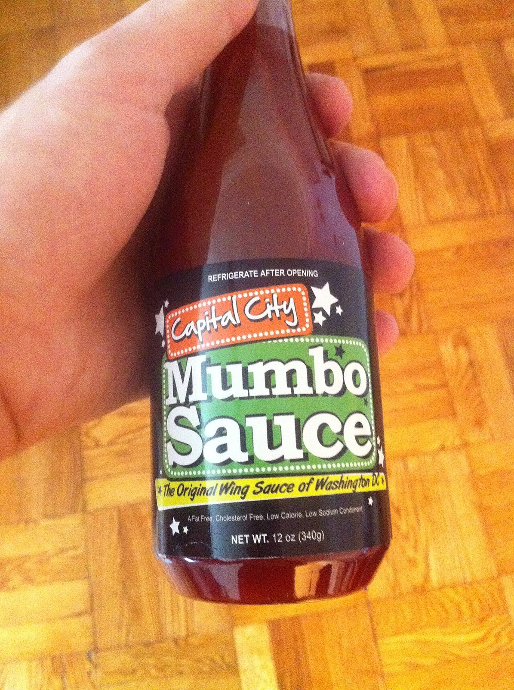

a sauceMumbo sauce
also: mambo sauce · Mumbo® Sauce
Ordered by the squeeze: 'wings and fries, mumbo on everything.' Spelled mumbo in Chicago and on the trademark, mambo on plenty of D.C. counters.

A carryout condiment of Washington, D.C.: red-orange, thick, poured over fried chicken wings, french fries, fried jumbo shrimp and fried rice. Close to barbecue sauce but sweeter, and either spicier or more sour depending on whose it is. The consistency and the flavour vary shop to shop. Its origin and its ingredients are both disputed, and so is its spelling.
The story Cited · wp-mumbo-sauce
The trademark belongs to Chicago. Argia B. Collins Sr. used the Mumbo name for a barbecue sauce he developed for his Chicago restaurant from at least 1950; his successor-in-interest, Select Brands, LLC, registered it with the US Patent and Trademark Office on 25 May 1999, Registration No. 2,247,855. Select Brands has challenged D.C. sellers who use the term.
The D.C. account runs through a restaurant called Wings-n-Things in the late 1960s, according to Capital City Mumbo Sauce. A John Young's Wings-n-Things had been serving mumbo sauce on chicken wings in Buffalo, New York since the early 1960s, and Young credited a Washington, D.C. restaurant for the sauce — a boxer had told him a D.C. place was doing good business in wings, so he specialised. Since Collins's sauce runs back to the 1950s, before it showed up at Wings-n-Things, the D.C. version is speculated to be a transplant of the Chicago original. After two years of argument the Trademark Trial and Appeal Board found that a D.C.-based company could not take the name from its Chicago founder.
It stays a live argument in the city. In 2018 Mayor Muriel Bowser called mumbo sauce "annoying" in a Facebook post and questioned whether it was "quintessential" D.C.; her spokesperson said the remarks were meant to liven Thanksgiving discussions. McDonald's released a limited-time version on 9 October 2023 with a media campaign and a short YouTube documentary on the sauce's history.
The name carries beyond the counter: the go-go group Mambo Sauce took its name from it, Christylez Bacon performs a song about it, Black Flag Brewing in Columbia, Maryland named a beer Mambo Sauce, and Camille Acker's collection Training School for Negro Girls contains a story called "Mambo Sauce".
How it is done Tradition
Poured, not tossed. A carryout squeezes it over the wings and the fries in the box so both arrive wet, or hands it over in a lidded cup. Every shop mixes its own; the bottled Capital City version starts with ketchup, then sugar, then water, then soy sauce, and takes its heat from a cayenne pepper hot sauce well down the list.
Today Harvested · fdc-capital-city-mild-mambo
Bottled by Capital City and by others, and made in-house at carryouts across the District. As of 16 September 2026 the USDA label panel for Capital City Mild Mambo Sauce reads 160 mg sodium and 10 g sugar in a 2-tablespoon serving — 80 mg and 5 g in one tablespoon. Nobody publishes a Scoville number for it. The house sauces have no label at all.
The particulars
| base | sweet-tomato |
|---|---|
| heat | mild |
| region | Washington, D.C., Chicago, The United States |
| confidence | high · updated 2026-09-16 |
On the label
| what was read | bottle · Capital City, LLC · Washington, DC |
|---|---|
| pepper or chile | #6 on the label |
| vinegar | #5 on the label |
| butter or oil | — |
| tomato | #1 on the label |
| sugar | #2 on the label |
| soy sauce | #4 on the label |
| mustard | — |
| sodium per tablespoon | 80 mg (the FDA counts 2,300 mg as a day) |
| sugar per tablespoon | 5 g (a tablespoon of table sugar is about 12.6 g) |
| Scoville | nobody publishes one for this bottle |
| heat, in the maker's own word | “Mild” |
| the label, in order | tomato ketchup, sugar, water, soy sauce, vinegar, cayenne pepper hot sauce, paprika |
Read from this page, 2026-09-16. Capital City Mild Mambo Sauce, 12 fl oz. Label serving is 2 Tbsp (21 g); sodium 160 mg and sugars 10 g per serving, so 80 mg and 5 g per tablespoon. Ranks count the top-level list only — the ketchup carries its own sugar and vinegar inside the parenthesis, which the tomato_rank of 1 does not show. heat_claim is the maker's own front-label word. The Sweet Hot bottle shows the same sodium and sugar and adds habanero pepper extract. Nobody publishes a Scoville figure; the carryout versions have no label to read at all. Every bottle we have read is on the sauce page.
Recipes you can use
Old cookbooks are printed whole, spelling and all. Where a recipe is still somebody's copyright, you get the ingredient list and a link to the rest.
Chili sauce (No. 2)
- two dozen ripe tomatoes
- six onions
- two red peppers
- a teacupful of granulated sugar
- four tablespoonfuls of salt
- three teaspoonfuls, each, of powdered allspice, cloves and cinnamon
- a teaspoonful of ground ginger
- two quarts of vinegar
Copied verbatim, old spellings kept. Not mumbo sauce — an American home 'chili sauce', tomato and vinegar and sugar and red pepper, bottled and kept. It is the shelf-stable tomato condiment the carryout sauces were later built on top of.
Not to be confused with
- Mild sauce — City and label. Mild sauce is Chicago's word; mumbo is the registered Chicago trademark that D.C. adopted. The bottles taste close.
- Honey barbecue sauce — Mumbo runs thinner and sourer, and a national honey barbecue sauce leads with corn syrup rather than ketchup.
Who it runs with
Who talks about it
Where we got it
- Mumbo sauce · link
- Mild sauce · link
- Buffalo wing · link
- Capital City Mild Mambo Sauce — branded food label (FDC ID 2147935) · link
- Marion Harland's Complete Cook Book: A Practical and Exhaustive Manual of Cookery and Housekeeping — Marion Harland, 1906 · link
Where it came from: Cited a source we name · Harvested pulled from an open dataset · Tradition what the tradition says, hedged · Inference this project's reasoning · Field somebody stood there. This record as JSON.